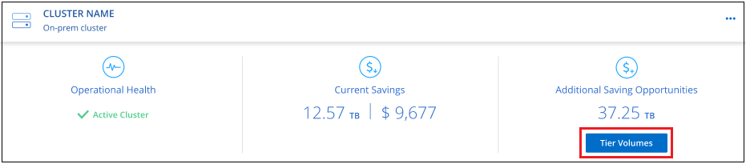
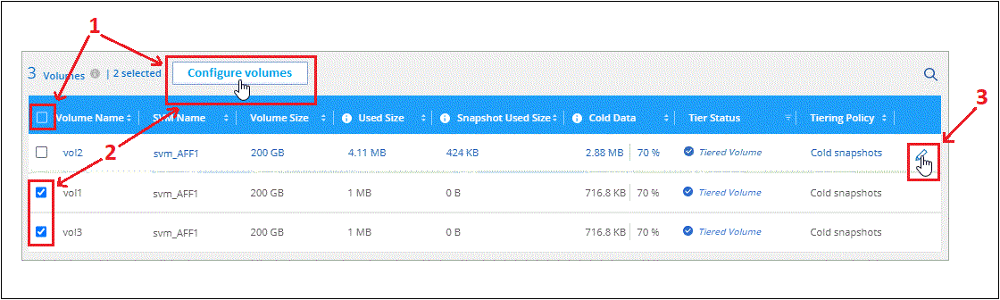
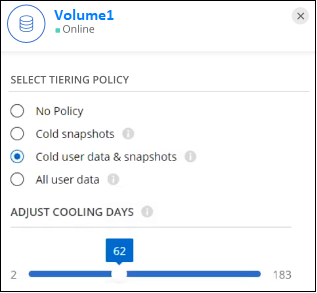
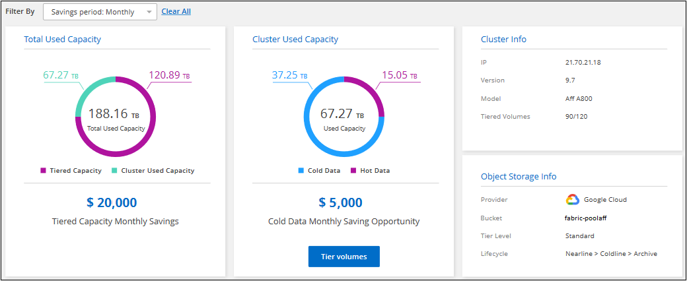

문서 변경 요청
문서 변경 요청 이 페이지 편집
이 페이지 편집 기여하는 방법 자세히 알아보기
기여하는 방법 자세히 알아보기클러스터에서 데이터 계층화 관리
이제 사내 ONTAP 클러스터에서 데이터 계층화를 설정했으므로 추가 볼륨의 데이터를 계층화하고, 볼륨의 계층화 정책을 변경하고, 추가 클러스터를 검색할 수 있습니다.
추가 볼륨의 데이터 계층화
새 볼륨을 생성한 후 등 언제든지 추가 볼륨에 대한 데이터 계층화를 설정할 수 있습니다.

|
오브젝트 스토리지는 처음에 클러스터에 대한 계층화를 설정할 때 이미 구성되어 있으므로 구성할 필요가 없습니다. ONTAP는 추가 볼륨의 비활성 데이터를 동일한 오브젝트 저장소로 계층화합니다. |
-
Cloud Manager 상단에서 * Tiering * 을 클릭합니다.
-
클러스터 대시보드 * 에서 클러스터에 대한 * 계층 볼륨 * 을 클릭합니다.

-
Tier Volumes_ 페이지에서 계층화를 구성할 볼륨을 선택하고 계층화 정책 페이지를 시작합니다.
-
모든 볼륨을 선택하려면 제목 행(
 )를 클릭하고 * 볼륨 구성 * 을 클릭합니다.
)를 클릭하고 * 볼륨 구성 * 을 클릭합니다. -
여러 볼륨을 선택하려면 각 볼륨에 대한 확인란을 선택합니다(
 )를 클릭하고 * 볼륨 구성 * 을 클릭합니다.
)를 클릭하고 * 볼륨 구성 * 을 클릭합니다. -
단일 볼륨을 선택하려면 행(또는)을 클릭합니다
 아이콘)을 클릭합니다.
아이콘)을 클릭합니다.
-
-
Tiering Policy_대화 상자에서 계층화 정책을 선택하고 선택한 볼륨의 냉각 날짜를 필요에 따라 조정한 다음 * Apply * 를 클릭합니다.

선택한 볼륨의 데이터가 클라우드로 계층화되기 시작합니다.
볼륨의 계층화 정책 변경
볼륨에 대한 계층화 정책을 변경하면 ONTAP에서 콜드 데이터를 오브젝트 스토리지에 계층화하는 방식이 변경됩니다. 이 변경은 정책을 변경하는 순간부터 시작됩니다. 볼륨에 대한 후속 계층화 동작만 변경하며 데이터를 클라우드 계층으로 소급 이동하지는 않습니다.
-
Cloud Manager 상단에서 * Tiering * 을 클릭합니다.
-
클러스터 대시보드 * 에서 클러스터에 대한 * 계층 볼륨 * 을 클릭합니다.
-
볼륨의 행을 클릭하고 계층화 정책을 선택한 다음 필요에 따라 냉각 일을 조정하고 * 적용 * 을 클릭합니다.
-
참고: * "Tiered Data 검색" 옵션이 표시되면 를 참조하십시오 클라우드 계층에서 성능 계층으로 데이터 마이그레이션 를 참조하십시오.
-
계층화 정책이 변경되고 새 정책에 따라 데이터가 계층화되기 시작합니다.
클라우드 계층에서 성능 계층으로 데이터 마이그레이션
클라우드에서 액세스하는 계층형 데이터는 "재가열"되어 성능 계층으로 다시 이동할 수 있습니다. 하지만 클라우드 계층에서 성능 계층으로 데이터를 사전 예방적으로 승격하려는 경우 _Tiering Policy_Dialog를 사용하여 이러한 작업을 수행할 수 있습니다. 이 기능은 ONTAP 9.8 이상을 사용할 때 사용할 수 있습니다.
볼륨에 대한 계층화 사용을 중단하거나 모든 사용자 데이터를 성능 계층에 유지하되 스냅샷 복사본을 클라우드 계층에 보관하려는 경우 이 작업을 수행할 수 있습니다.
두 가지 옵션이 있습니다.
| 옵션을 선택합니다 | 설명 | 계층화 정책에 미치는 영향 |
|---|---|---|
모든 데이터를 다시 가져옵니다 |
이 명령어는 클라우드에서 계층화된 모든 볼륨 데이터와 스냅샷 복사본을 검색하여 성능 계층으로 상향 이동합니다. |
계층화 정책이 "정책 없음"으로 변경되었습니다. |
액티브 파일 시스템을 다시 실행합니다 |
활성 파일 시스템 데이터만 클라우드에서 계층화하여 성능 계층으로 상향 이동합니다(스냅샷 복사본은 클라우드에 남아 있음). |
계층화 정책이 "콜드 스냅샷"으로 변경되었습니다. |

|
클라우드에서 전송되는 데이터 양에 따라 클라우드 공급자가 비용을 청구할 수 있습니다. |
클라우드에서 이동하는 모든 데이터에 대해 성능 계층에 충분한 공간이 있어야 합니다.
-
Cloud Manager 상단에서 * Tiering * 을 클릭합니다.
-
클러스터 대시보드 * 에서 클러스터에 대한 * 계층 볼륨 * 을 클릭합니다.
-
를 클릭합니다
볼륨 아이콘을 클릭하고 사용할 검색 옵션을 선택한 다음 * 적용 * 을 클릭합니다.
계층화 정책이 변경되고 계층화된 데이터가 성능 계층으로 다시 마이그레이션되기 시작합니다. 클라우드에 있는 데이터의 양에 따라 전송 프로세스에 시간이 다소 걸릴 수 있습니다.
애그리게이트에서 계층화 설정 관리
온프레미스 ONTAP 시스템의 각 애그리게이트에는 조정할 수 있는 두 가지 설정, 즉 계층화 충만 임계값 및 비활성 데이터 보고가 활성화되어 있는지 여부가 있습니다.
- 계층화 전체 임계값
-
임계값을 더 낮은 수로 설정하면 계층화를 수행하기 전에 성능 계층에 저장해야 하는 데이터의 양이 줄어듭니다. 활성 데이터가 거의 없는 대규모 Aggregate에 유용할 수 있습니다.
임계값을 더 높은 수로 설정하면 계층화를 수행하기 전에 성능 계층에 저장해야 하는 데이터의 양이 증가합니다. 이 기능은 애그리게이트가 최대 용량에 근접할 때만 계층화하도록 설계된 솔루션에 유용할 수 있습니다.
- 비활성 데이터 보고
-
비활성 데이터 보고(IDR)는 31일 냉각 기간을 사용하여 비활성으로 간주되는 데이터를 결정합니다. 계층화하는 콜드 데이터의 양은 볼륨에 설정된 계층화 정책에 따라 달라집니다. 이 양은 31일 냉각 기간을 사용하여 IDR에서 감지한 콜드 데이터 양과 다를 수 있습니다.
비활성 데이터 및 절약 기회를 식별하는 데 도움이 되므로 IDR을 계속 사용하는 것이 좋습니다. 데이터 계층화가 Aggregate에서 활성화된 경우 IDR은 활성화 상태를 유지해야 합니다.
-
Cloud Manager 상단에서 * Tiering * 을 클릭합니다.
-
Cloud Tiering * 페이지에서 클러스터의 메뉴 아이콘을 클릭하고 * 애그리게이트 관리 * 를 선택합니다.

-
애그리게이트 관리 * 페이지에서 을 클릭합니다
테이블의 집계 아이콘 -
전체 임계값을 수정하고 비활성 데이터 보고를 활성화 또는 비활성화할지 여부를 선택합니다.

-
적용 * 을 클릭합니다.
클러스터의 계층화 정보 검토
클라우드 계층에 있는 데이터의 양과 디스크에 있는 데이터의 양을 확인하려는 경우가 있을 수 있습니다. 또는 클러스터 디스크에서 핫 데이터와 콜드 데이터의 양을 확인할 수도 있습니다. Cloud Tiering은 각 클러스터에 대해 이 정보를 제공합니다.
-
Cloud Manager 상단에서 * Tiering * 을 클릭합니다.
-
클러스터 대시보드 * 에서 클러스터의 메뉴 아이콘을 클릭하고 * 클러스터 정보 * 를 선택합니다.
-
클러스터에 대한 세부 정보를 검토합니다.
예를 들면 다음과 같습니다.

또한 가능합니다 "Active IQ 디지털 자문업체 에서 클러스터의 계층화 정보 보기" 이 NetApp 제품에 대해 잘 아실 것입니다. 왼쪽 탐색 창에서 * FabricPool Advisor * 를 선택하면 됩니다.

운영 상태 수정
장애가 발생할 수 있습니다. 이 경우 Cloud Tiering은 클러스터 대시보드에 "Failed" 운영 상태를 표시합니다. 상태는 ONTAP 시스템 및 Cloud Manager의 상태를 반영합니다.
-
작동 상태가 "Failed(실패)"인 모든 클러스터를 식별합니다.

-
에 마우스를 올려 놓습니다
 아이콘을 클릭하여 실패 원인을 확인합니다.
아이콘을 클릭하여 실패 원인을 확인합니다. -
문제 해결:
-
ONTAP 클러스터가 작동 중이고 객체 스토리지 공급자에 대한 인바운드 및 아웃바운드 연결이 있는지 확인합니다.
-
Cloud Manager가 Cloud Tiering 서비스, 오브젝트 저장소 및 해당 서비스가 검색하는 ONTAP 클러스터에 대한 아웃바운드 연결을 사용하는지 확인합니다.
-
Cloud Tiering에서 추가 클러스터 검색
검색되지 않은 온프레미스 ONTAP 클러스터를 Tiering_Cluster Dashboard_에서 Cloud Manager에 추가하여 클러스터에 대한 계층화를 설정할 수 있습니다.
추가 클러스터를 검색할 수 있는 버튼이 Tiering_On-Premise Overview_ 페이지에도 나타납니다.
-
Cloud Tiering에서 * Cluster Dashboard * 탭을 클릭합니다.
-
검색되지 않은 클러스터를 보려면 * 검색되지 않은 클러스터 표시 * 를 클릭합니다.

NSS 자격 증명을 Cloud Manager에 저장하면 계정의 클러스터가 목록에 표시됩니다.
NSS 자격 증명이 Cloud Manager에 저장되지 않은 경우, 먼저 자격 증명을 추가하라는 메시지가 표시된 후 검색되지 않은 클러스터를 볼 수 있습니다.
-
페이지를 아래로 스크롤하여 클러스터를 찾습니다.

-
Cloud Manager를 통해 관리할 클러스터의 * 클러스터 검색 * 을 클릭하고 데이터 계층화를 구현합니다.
-
Choose a Location_page * On-Premises ONTAP * 가 미리 선택되어 있으므로 * Continue * 를 클릭합니다.
-
ONTAP 클러스터 세부 정보 _ 페이지에서 admin 사용자 계정의 암호를 입력하고 * 추가 * 를 클릭합니다.
클러스터 관리 IP 주소는 NSS 계정의 정보에 따라 채워집니다.
-
Details & Credentials_ 페이지에서 클러스터 이름이 작업 환경 이름으로 추가되므로 * Go * 를 클릭합니다.
Cloud Manager는 클러스터를 검색하고 클러스터 이름을 작업 환경 이름으로 사용하여 Canvas의 작업 환경에 추가합니다.
오른쪽 패널에서 이 클러스터에 대한 계층화 서비스 또는 기타 서비스를 활성화할 수 있습니다.